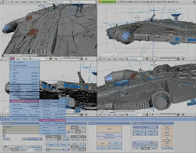
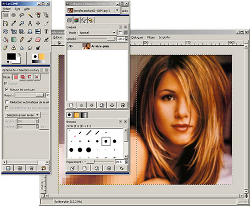
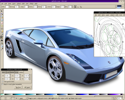

Guadalinex v6 - Software Libre
| Programa: | Blender 2.48a (32 y 64 bits) |
|---|---|
| Web: | http://www.blender.org/ |
| Instalador: | Instalar 32bits Instalar 64bits |
|  | Blender es un programa multiplataforma, dedicado especialmente al modelado, animación y creación de gráficos tridimensionales. Aún siendo una herramienta relativamente nueva, tiene la aceptación de muchos animadores independientes. En la industria de Generación de Gráficos avanza como un proyecto prometedor. Si bien las superproducciones no lo han usado para generar secuencias CGI (Imagen generada por ordenador), existen proyectos actuales que han empezado a usarlo profesionalmente. - Actualmente se está llevando a cabo la producción del primer largometraje animado realizado íntegramente con Software Libre, usando a Blender como principal herramienta: Plumíferos. Se espera su estreno para finales de 2009. - Películas como SpiderMan 2 lo han usado para hacer una previsualización de escenas (Screen-Board Test). |
| Programa: | Gimp 2.6.6 |
|---|---|
| Web: | http://www.gimp.org/ |
| Instalador: | Instalar |
|  | GIMP (GNU Image Manipulation Program) es un programa de edición de imágenes digitales en forma de mapa de bits, tanto para dibujos como fotografías. Al ser tremendamente versátil, puede utilizarse tanto para realizar dibujos simples como para realizar retoques avanzados en fotografía, procesos batch en linea, renderizar imágenes por lotes, convertir formátos de imagen,... Sobre todo, Gimp es una excelente alternativa a otras aplicaciones propietarias habituales en diseno y fotografía. |
| Programa: | Inkscape 0.46 |
|---|---|
| Web: | http://www.inkscape.org/?lang=es |
| Instalador: | Instalar |
|  | Inkscape es un editor de gráficos vectoriales de cádigo abierto, con capacidades similares a Illustrator, Freehand, CorelDraw o Xara X, usando el estándar de la W3C: el formato de archivo Scalable Vector Graphics (SVG). Las características soportadas incluyen: formas, trazos, texto, marcadores, clones, mezclas de canales alfa, transformaciones, gradientes, patrones y agrupamientos. Inkscape también soporta meta-datos Creative Commons, edición de nodos, capas, operaciones complejas con trazos, vectorización de archivos gráficos, texto en trazos, alineación de textos, edición de XML directo y mucho más. Puede importar formatos como Postscript, EPS, JPEG, PNG, y TIFF y exporta PNG asi como muchos formatos basados en vectores. El objetivo principal de Inkscape es crear una herramienta de dibujo potente y cómoda, totalmente compatible con los estándares XML, SVG y CSS. |